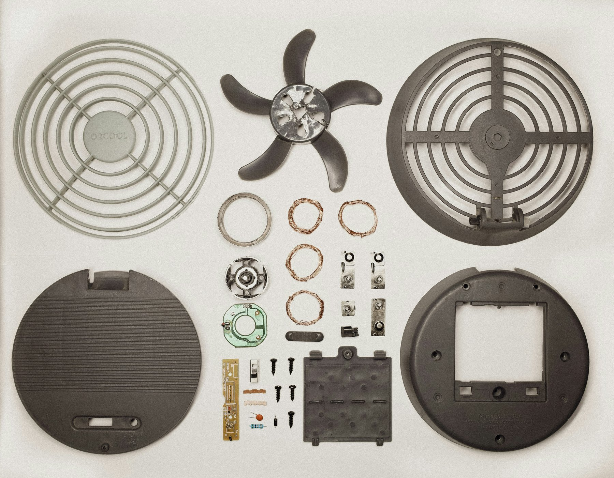

A mobile application that identifies a broken, faulty, or missing component of a tool or appliance from a photograph, then restores it to working order through repair instructions, replacement-part sourcing, or a custom 3D-printed part.
Objective
Allow a non-specialist user to identify a broken or missing component from a photograph and restore the item to working order.
Contribution
Product design and application development, built in Expo for iOS and Android.
Current stage
First version in development, beginning with the photograph-to-diagnosis workflow.

Photo: Kat, via Unsplash.
User flow
The user submits a photograph and a short description of the problem.
The application identifies the system and the likely broken, faulty, or missing component.
Where practical, step-by-step repair instructions are provided.
Otherwise, affordable and reliable replacement parts are listed, with the reasoning for each.
Where no replacement exists, the user can request a CAD model and a 3D-printed part.
Instructions cover fitting the part and returning the item to normal use.
Design decisions
Expo (React Native) was chosen so that one codebase supports both iOS and Android.
The application is designed for non-specialist users, with plain-language instructions and as few steps as possible.
Next steps
Complete the photograph-to-diagnosis workflow.
Test with real broken items and measure diagnostic accuracy.
Add part sourcing and a request form for custom printed parts.